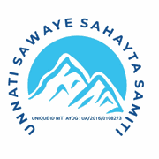

गौ सेवा | समाज सेवा | पर्यावरण संरक्षण | मानव सेवा
गौ माता राष्ट्रमाता जनआंदोलन, गौ संरक्षण, घायल गोवंश सहायता, पर्यावरण संरक्षण, मानव सेवा एवं सामाजिक जागरूकता हेतु समर्पित पंजीकृत संस्था।
संस्था के बारे में जानेंउन्नति स्वयं सहायता समिति एक सामाजिक, गैर-लाभकारी एवं जनहितकारी संस्था है, जो वर्ष 2016 से गौ संरक्षण, गौ माता राष्ट्रमाता जनआंदोलन, घायल एवं निराश्रित गोवंश की सहायता, मानव सेवा, पर्यावरण संरक्षण, पशु-पक्षी सेवा, शिक्षा, सामाजिक जागरूकता, रक्तदान, राहत एवं पुनर्वास तथा जरूरतमंद लोगों की सहायता के क्षेत्र में निरंतर कार्य कर रही है। संस्था का मूल उद्देश्य "सेवा ही संगठन" के सिद्धांत पर कार्य करते हुए मानवता, राष्ट्रहित, गौ सेवा एवं पर्यावरण संरक्षण के लिए जनजागरण एवं सेवा कार्यों को आगे बढ़ाना है।
गौ संरक्षण, घायल गोवंश सहायता, पशु-पक्षी सेवा, पर्यावरण संरक्षण, मानव सेवा, गरीब एवं जरूरतमंद लोगों की सहायता तथा युवाओं में सामाजिक चेतना विकसित करना।
भारत में गौ सेवा, पर्यावरण संरक्षण एवं मानवता आधारित जनआंदोलन को मजबूत बनाना, समाज के प्रत्येक वर्ग को सेवा कार्यों से जोड़ना तथा राष्ट्रहित में जनभागीदारी बढ़ाना।
गौ माता राष्ट्रमाता आंदोलन, जनजागरूकता अभियान, रक्तदान, पर्यावरण संरक्षण एवं समाज सेवा से जुड़े प्रमुख सेवा कार्य
रामनगर गर्जिया देवी मंदिर से करनाल तक गौ माता राष्ट्रमाता हेतु 400 किलोमीटर पैदल यात्रा।
गौ माता को राष्ट्रमाता एवं राज्यमाता घोषित करने हेतु जनआंदोलन।
गौ माता को राज्यमाता का दर्जा दिलाने हेतु 36 विधायकों से लिखित समर्थन प्राप्त।
अयोध्या से बागेश्वर धाम तक गौ माता राष्ट्रमाता हेतु 700 किलोमीटर पदयात्रा।
हरिद्वार से मोटेश्वर महादेव तक गौ माता राज्यमाता अभियान हेतु यात्रा।
चार माह तक निरंतर गौ माता राज्यमाता अभियान एवं अखंड ज्योति भ्रमण।
उत्तराखंड में गौ माता को राज्यमाता का दर्जा दिलाने हेतु समर्थन एवं पत्राचार।
भीषण गर्मी में बेजुबान पक्षियों के लिए दाना एवं पानी की व्यवस्था।